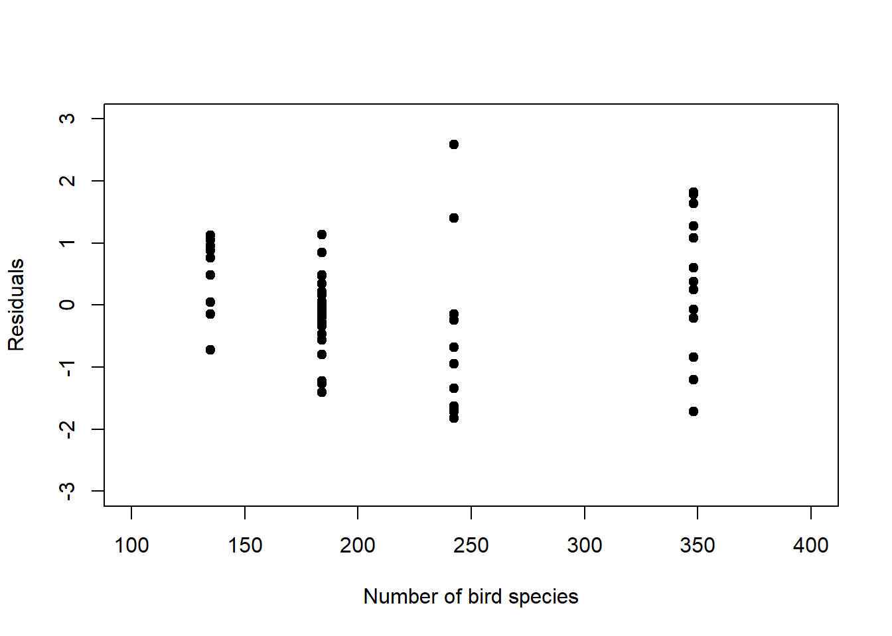
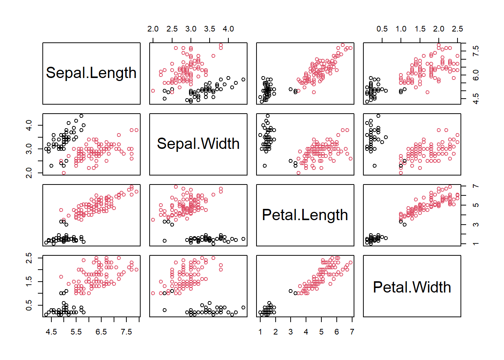
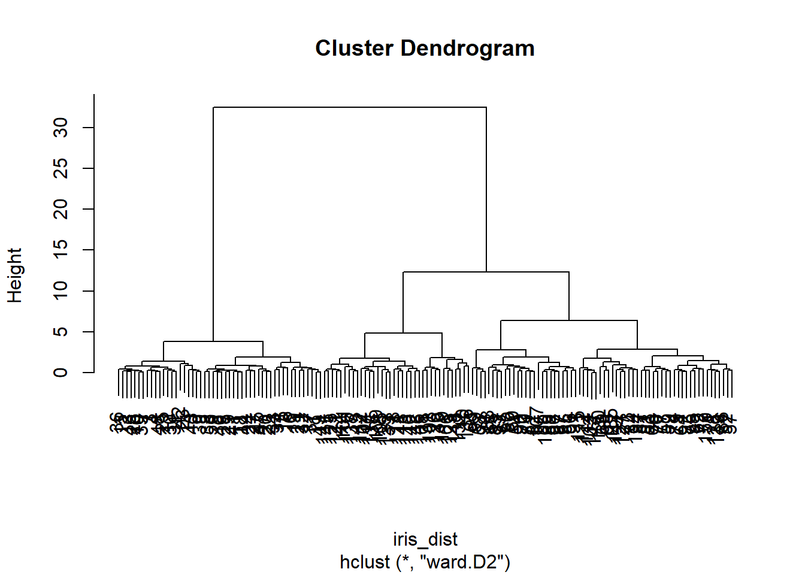
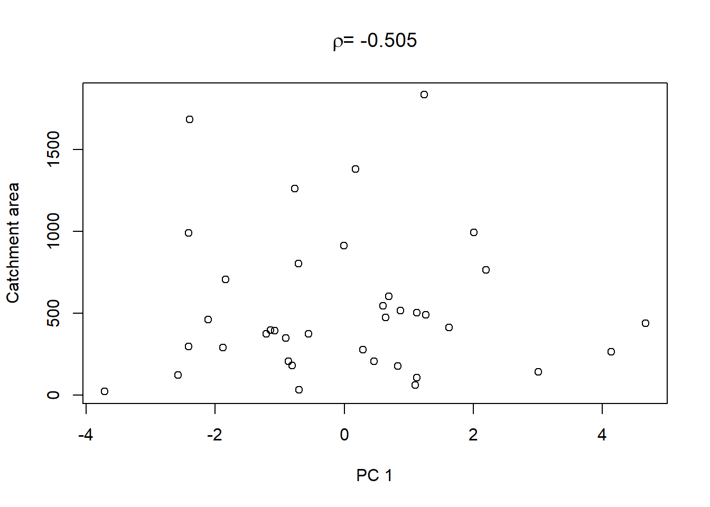
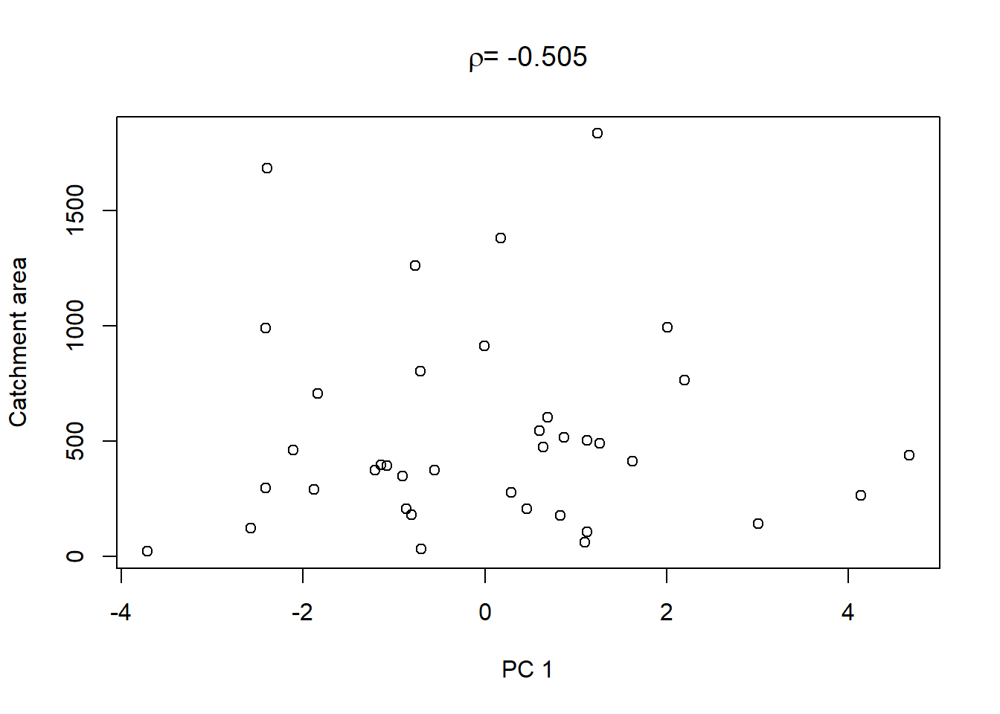

Chapter 7 Multivariate methods
Multivariate regression extends the case of multiple regression (one response variable/ multiple predictor variables) to the case of multiple response variables/ multiple predictor variables. Predictors are continuous variables, though there is the same correspondence as between linear regression and ANOVA.
Multivariate analysis of variance (MANOVA) (Chapter 7.3) extends the case of ANOVA (one response variable/ multiple predictor variables) to the case of multiple response variables/ multiple predictor variables. Predictors are categorical variables, though MANOVA relates to multivariate regression just like ANOVA does to linear regression.
Discriminant Function Analysis (DFA) (Chapter 7.4) is a classification method that tests how well multi-response observations discriminate between pre-determined groups, and can also be used to classify new observations into one of the groups.
Principle Component Analysis (PCA) (Chapter 7.2), Factor Analysis (FA) and related methods aim at finding structure in a multivariate dataset, not deciding on response/predictor variables just yet. They extract a reduced set of components that explain much of the variability or correlation among the original variables. PCA and FA are typically employed to pre-structure and simplify a problem by reducing its data dimensions, e.g. to reduce collinearity (compare Chapter 4).
Cluster Analysis (Chapter 7.1) looks for groups in a multivariate dataset. Data points belonging to the same group “resemble” each other - we will see what this means. Data points belonging to different groups are “dissimilar”.
7.1 Cluster analysis
This section is based on material by Cornelius Senf.25 Cluster analysis looks for groups (clusters) in a multivariate dataset. Objects (data points) belonging to the same group “resemble” each other. Objects belonging to different groups are “dissimilar”. There are three groups of methods:
- Partitioning the dataset into a number of clusters specified by the user, e.g. the kmeans algorithm
- Hierarchical, starting with each object (data point) as a separate cluster and then aggregating these step by step, ending up with a single cluster
- Divisive, starting with a single cluster of all objects (data points) and then splitting this step by step until all objects are in different clusters
Let us illustrate the principles of these methods with the Iris dataset that is available from R, on which cluster analysis can be used to separate taxonomic groups. The dataset consists of a sample of Iris flowers for which the lengths and widths of their sepals and petals were measured. Sepals and petals are two different kinds of leaves in the flower. The question is: Can we separate clusters of flowers that are sufficiently different with respect to these four features? This then could form the basis of deriving taxonomic groups; indeed this is a typical approach in botany. To get a sense of the dataset let us first plot a scatterplot matrix:

We can already see at least two clusters. In some dimensions (petal length and width) they are more apart than in others (sepal length and width). Let us formalise this analysis using the kmeans algorithm and afterwards look briefly at what hierarchical methods do.
7.1.1 The kmeans algorithm
The purpose of kmeans is to build clusters such that the distance of cluster objects (data points) to cluster centroids (vectors of means) is minimised. The algorithm proceeds though the following steps:
- Choose \(k\) random cluster centroids in the multivariate space
- Allocate each object to a cluster so that total intra-cluster sum of squares (Equation (7.1)) is minimised
\[\begin{equation} \sum_{j=1}^{k}\sum_{i=1}^{n_j}\lVert \mathbf{y}_{ij}-\boldsymbol{\mu}_j\rVert^2 \tag{7.1} \end{equation}\]
\(\boldsymbol{\mu}_j\) is the centroid of cluster \(j=1,2,\ldots,k\), i.e. the vector of means across the data dimensions (here four). \(\mathbf{y}_{ij}\) is data point \(i=1,2,\ldots,n_j\) of cluster \(j\), i.e. a multivariate vector, too. \(\lVert\cdot\rVert\) symbolises the Euclidean distance.
- Re-calculate cluster centroids
- Repeat steps 2-3 until cluster centroids are not changing much anymore (by some chosen criterion)
Often the Euclidean distance is used as a measure of (dis)similarity but others can be specified as well.
We have to tell the algorithm how many clusters we want. Let us use two to begin with (because that was our intuition earlier):
# run kmeans algorithm on Iris data asking for 2 clusters
iris_fit2 <- kmeans(iris[,1:4], centers=2)
# scatterplot matrix
plot(iris[,1:4], col=iris_fit2$cluster)
Two clusters did not seem enough to reproduce the separation we see visually. Let us increase the number of clusters to three:
# run kmeans algorithm on Iris data asking for 3 clusters
iris_fit3 <- kmeans(iris[,1:4], centers=3)
# scatterplot matrix
plot(iris[,1:4], col=iris_fit3$cluster)
I think we would be happy with this visually. But are there perhaps even more clusters? When to stop? A useful stopping criterion is to look at the inflexion point where the total intra-cluster sum of squares (Equation (7.1)) does not change much anymore with increasing \(k\) in a so called screeplot26:
# specify vector of clusters
clusters <- 1:10
# initialise corresponding vector of total intra-cluster sum of squares
ticss <- rep(NA, 10)
# loop through vector of clusters
for(i in clusters){
# run kmeans
iris_fit <- kmeans(iris[,1:4], centers=i)
# collect total intra-cluster sum of squares
ticss[i] <- iris_fit$tot.withinss
}
# plot total intra-cluster sum of squares against clusters
plot(clusters, ticss, pch = 19, type = 'b', xlab = "Number of clusters",
ylab = "Total intra-cluster sum of squares")
We can see that beyond three clusters the improvement in separation is minimal, so we would leave it at three. This, it turns out, matches almost perfectly the official taxonomic separation of the Iris dataset:
##
## setosa versicolor virginica
## 1 0 2 36
## 2 0 48 14
## 3 50 0 0The separation of Iris versicolor and Iris virginica, however, is not perfect.
7.1.2 Hierarchical methods
The principle of hierarchical methods is to start with each object as a separate cluster and then aggregate these step by step, ending up with a single cluster. Note, devisive methods are not covered here, but they work exactly the other way round. An example algorithm works as follows:
- Build dissimilarity matrix, i.e. a matrix of the distances of every object to every other object in the multivariate space, e.g. by Euclidean distance \(\lVert\mathbf{y}_i-\mathbf{y}_{i^*}\rVert\)
- Start with each object as a separate cluster
- Join the two most similar clusters, e.g. those that lead to minimum increase in total intra-cluster sum of squares after merging (Equation (7.1)); this is called Ward’s method
- Repeat step 3 until a single cluster is built
The result is a dendrogram, whose “height” is the distance between clusters, e.g. in Ward’s method the increase in the intra-cluster sum of squares of the clusters being merged:
# construct dissimilarity matrix for Iris data
iris_dist <- dist(iris[,1:4])
# run hierarchical clustering with Ward's method
iris_fith <- hclust(iris_dist, method="ward.D2")
# dendrogram
plot(iris_fith)
Again we can see the three clearly separate clusters, beyond which any further separation is ambiguous.
7.2 Principal Component Analysis (PCA)
To illustrate PCA, I will use a dataset from Lovett, Weathers, and Sobczak (2000), cited in Quinn and Keough (2002), that consists of stream chemistry measurements from 38 forested catchments in the Catskill Mountains, New York:
## catchm_name max_elev sample_elev stream_length
## 1 Santa_Cruz 1006 680 1680
## 2 Colgate 1216 628 3912
## 3 Halsey 1204 625 4032
## 4 Batavia_Hill 1213 663 3072
## 5 Windham_Ridg 1074 616 2520
## 6 Silver_Sprin 1113 451 3120
## catchm_area NO3 TON TN NH4 DOC SO4 CL CA
## 1 23 24.2 5.6 29.9 0.8 180.4 50.6 15.5 54.7
## 2 462 25.4 4.9 30.3 1.4 108.8 55.4 16.4 58.4
## 3 297 29.7 4.4 33.0 0.8 104.7 56.5 17.1 65.9
## 4 399 22.1 6.1 28.3 1.4 84.5 57.5 16.8 59.5
## 5 207 13.1 5.7 17.6 0.6 82.4 58.3 18.3 54.6
## 6 348 27.5 3.0 30.8 1.1 86.6 63.0 15.7 68.5
## MG H
## 1 14.4 0.48
## 2 17.0 0.24
## 3 19.6 0.47
## 4 19.5 0.23
## 5 21.9 0.37
## 6 22.4 0.17The dataset first lists catchment characteristics: name, maximum elevation, elevation where stream water sample was taken, stream length, catchment area. The stream chemistry variables are concentrations of: nitrate, total organic nitrogen, total nitrogen, ammonium, dissolved organic carbon, sulfate, chloride, calcium, magnesium, hydrogen.
7.2.1 From univariate normal to multivariate normal
Like univariate methods, multivariate methods, too, rely on the normality assumption; the univariate normal distribution (Figure 7.1, left) is generalised to the multivariate normal distribution (Figure 7.1, right). Taking calcium concentration in the stream chemistry dataset as an example, the univariate normal model would be \(N(\mu,\sigma)\) with mean \(\mu=65.13\) and variance \(\sigma^2=194.74\) (Figure 7.1, left). Looking at calcium and magnesium concentration together, the multivariate normal model would be \(MVN(\boldsymbol\mu,\boldsymbol\Sigma)\) with centroid (vector of means) \(\boldsymbol\mu=\begin{pmatrix}65.13&22.86\end{pmatrix}^T\) and variance-covariance matrix \(\boldsymbol\Sigma=\begin{pmatrix}194.74&27.03\\27.03&194.74\end{pmatrix}\) (Figure 7.1, right).


Figure 7.1: Left: Histogram of calcium concentration measurements from stream chemistry dataset, with fitted normal distribution. The vertical line marks the mean. Right: Scatterplot of calcium against magnesium concentration measurements, with coloured countours of fitted multivariate normal distribution. The vertical and horizontal lines are the individual means, which intersect at the centroid. Data from: Lovett, Weathers, and Sobczak (2000), cited in Quinn and Keough (2002).
The variance-covariance matrix (or just covariance matrix) is a matrix of associations between variables. On its diagonal are the variances of the individual variables,27 on the off-diagonals are the covariances between two variables:
\[\begin{equation} \mathbf{C}=\begin{pmatrix} \frac{\sum_{i=1}^{n}\left(y_{i1}-\bar y_1\right)^2}{n-1} & \cdots & \frac{\sum_{i=1}^{n}\left(y_{ip}-\bar y_p\right)\cdot\left(y_{i1}-\bar y_1\right)}{n-1} \\ \vdots & \ddots & \vdots \\ \frac{\sum_{i=1}^{n}\left(y_{i1}-\bar y_1\right)\cdot\left(y_{ip}-\bar y_p\right)}{n-1} & \cdots & \frac{\sum_{i=1}^{n}\left(y_{ip}-\bar y_p\right)^2}{n-1} \end{pmatrix} \tag{7.2} \end{equation}\]
Normalising the variance-covariance terms in Equation (7.2) by the variances of the respective variables, e.g. \(corr\left(y_1,y_2\right)=\frac{cov\left(y_1,y_2\right)}{\sqrt{\sigma_{y_1}^2\cdot\sigma_{y_2}^2}}=\frac{cov\left(y_1,y_2\right)}{\sigma_{y_1}\cdot\sigma_{y_2}}\), yields the correlation matrix:
\[\begin{equation} \mathbf{R}=\begin{pmatrix} \frac{\sum_{i=1}^{n}\left(y_{i1}-\bar y_1\right)^2}{\sqrt{\sum_{i=1}^{n}\left(y_{i1}-\bar y_1\right)^2\cdot\sum_{i=1}^{n}\left(y_{i1}-\bar y_1\right)^2}} & \cdots & \frac{\sum_{i=1}^{n}\left(y_{ip}-\bar y_p\right)\cdot\left(y_{i1}-\bar y_1\right)}{\sqrt{\sum_{i=1}^{n}\left(y_{ip}-\bar y_p\right)^2\cdot\sum_{i=1}^{n}\left(y_{i1}-\bar y_1\right)^2}} \\ \vdots & \ddots & \vdots \\ \frac{\sum_{i=1}^{n}\left(y_{i1}-\bar y_1\right)\cdot\left(y_{ip}-\bar y_p\right)}{\sqrt{\sum_{i=1}^{n}\left(y_{i1}-\bar y_1\right)^2\cdot\sum_{i=1}^{n}\left(y_{ip}-\bar y_p\right)^2}} & \cdots & \frac{\sum_{i=1}^{n}\left(y_{ip}-\bar y_p\right)^2}{\sqrt{\sum_{i=1}^{n}\left(y_{ip}-\bar y_p\right)^2\cdot\sum_{i=1}^{n}\left(y_{ip}-\bar y_p\right)^2}} \end{pmatrix} \tag{7.3} \end{equation}\]
Correlations terms are between \(-1\) and \(1\). Let us look at the associations between the variables in the stream chemistry dataset:

First of all, we notice the non-normality of DOC, Cl and H (at least; in principle this diagnosis is ambiguous). Hence we log-transform these three variables to make them adhere better to normality:
streams_log <- streams
streams_log$DOC <- log(streams$DOC)
streams_log$CL <- log(streams$CL)
streams_log$H <- log(streams$H)
pairs(streams_log[,6:15], diag.panel = panel.hist)
We then notice a positive correlation between NO3 and TN; most of the total nitrogen in streams actually comes in the form of nitrate. We notice a positive correlation between Ca and Mg; both are characteristic of alkaline waters and often appear together. We notice a positive correlation between Mg (and Ca) and SO4; magnesium (and calcium) often appear as Mg(Ca)-sulphate. And we notice a negative correlation between Ca and H; calcium is characteristic of alkaline waters, i.e. waters that have a high pH, hence a low hydrogen concentration. These associations are reflected in the covariance matrix:
## NO3 TON TN NH4 DOC
## NO3 74.1885 -4.367084 68.5691 -1.21607 0.26400
## TON -4.3671 1.636707 -2.5259 0.14817 0.07964
## TN 68.5691 -2.525910 65.6040 -0.97097 0.30097
## NH4 -1.2161 0.148165 -0.9710 0.53607 -0.09427
## DOC 0.2640 0.079635 0.3010 -0.09427 0.11367
## SO4 -1.8440 0.358563 0.9396 0.37102 -0.61138
## CL -1.2917 0.060403 -1.1992 0.07313 -0.01936
## CA 29.1344 -2.879523 29.0208 0.57644 -1.25322
## MG -14.7775 2.627397 -9.8612 0.77962 -0.60796
## H 0.3517 -0.008264 0.1717 -0.10161 0.09358
## SO4 CL CA MG H
## NO3 -1.8440 -1.29173 29.1344 -14.7775 0.351681
## TON 0.3586 0.06040 -2.8795 2.6274 -0.008264
## TN 0.9396 -1.19916 29.0208 -9.8612 0.171718
## NH4 0.3710 0.07313 0.5764 0.7796 -0.101607
## DOC -0.6114 -0.01936 -1.2532 -0.6080 0.093576
## SO4 27.2433 0.47721 35.0845 19.8258 -1.599979
## CL 0.4772 0.12766 0.8214 1.0110 -0.080456
## CA 35.0845 0.82144 194.7418 27.0328 -7.639475
## MG 19.8258 1.01104 27.0328 26.2495 -1.883364
## H -1.6000 -0.08046 -7.6395 -1.8834 0.454193In particular, \(cov(NO3,TN)=68.57\), \(cov(SO4,MG)=19.83\) and \(cov(CA,H)=-7.64\). However, at the scale of covariances we cannot judge the strengths of the associations, because the magnitude of the covariance is determined by the diagonal variance terms of the respective variables. We need to normalise by those variances, i.e. look at the correlation matrix:
## NO3 TON TN NH4 DOC
## NO3 1.00000 -0.396312 0.98287 -0.19283 0.09091
## TON -0.39631 1.000000 -0.24376 0.15818 0.18462
## TN 0.98287 -0.243763 1.00000 -0.16373 0.11021
## NH4 -0.19283 0.158179 -0.16373 1.00000 -0.38187
## DOC 0.09091 0.184623 0.11021 -0.38187 1.00000
## SO4 -0.04102 0.053697 0.02222 0.09709 -0.34742
## CL -0.41974 0.132144 -0.41437 0.27956 -0.16068
## CA 0.24239 -0.161289 0.25675 0.05642 -0.26636
## MG -0.33487 0.400848 -0.23763 0.20783 -0.35195
## H 0.06058 -0.009585 0.03146 -0.20592 0.41182
## SO4 CL CA MG H
## NO3 -0.04102 -0.4197 0.24239 -0.3349 0.060584
## TON 0.05370 0.1321 -0.16129 0.4008 -0.009585
## TN 0.02222 -0.4144 0.25675 -0.2376 0.031458
## NH4 0.09709 0.2796 0.05642 0.2078 -0.205917
## DOC -0.34742 -0.1607 -0.26636 -0.3519 0.411824
## SO4 1.00000 0.2559 0.48168 0.7414 -0.454846
## CL 0.25589 1.0000 0.16475 0.5523 -0.334131
## CA 0.48168 0.1648 1.00000 0.3781 -0.812295
## MG 0.74138 0.5523 0.37810 1.0000 -0.545448
## H -0.45485 -0.3341 -0.81230 -0.5454 1.000000Now the magnitude of the association is easier to see: \(corr(NO3,TN)=0.98\), \(corr(SO4,MG)=0.74\) and \(corr(CA,H)=-0.81\).
7.2.2 Linear combination of variables
A first step in multivariate analyses (PCA, DFA, FA etc.) is usually to centre the variables to zero mean: \(y^*=y-\mu\) so that \(\mu^*=0\) and \(\sigma^*=\sigma\). Compare Chapter 1.
Then, the fundamental concept underlying multivariate analyses is to derive new linear combinations of the variables that summarise the variation in the original data set:
\[\begin{equation} z_{ik}=u_{1k}\cdot y_{i1}+u_{2k}\cdot y_{i2}+\ldots+u_{pk}\cdot y_{ip} \tag{7.4} \end{equation}\]
\(z_{ik}\) is the value of the new variable \(k\) for object \(i\). The object is a datapoint for a timestep, spatial location or else. \(u_{1k},\ldots,u_{pk}\) are the coefficients indicating how much each original variable contributes to the linear combination. This is the so called Eigenvector of the covariance matrix (more on this later). \(y_{i1},\ldots,y_{ip}\) are the values of the original variables \(1,\ldots,p\) for object \(i\).
The new variables are called (depending on the method) principal components, factors or discriminant functions. They are extracted so that the first explains most of the variance in the original variables, the second explains most of the remaining variance after the first has been extracted but is independent of (uncorrelated with) the first … and so on. The number of new variables \(k\) is the same as the number of original variables \(p\), although the variance is usually consolidated in the first few new variables. The unknown coefficients \(u_{1k},\ldots,u_{pk}\) are determined via so called Eigenanalysis (see below).
A graphical explanation of what PCA does is axis rotation. We illustrate this with an example in 2D from Green (1997), cited in Quinn and Keough (2002); total biomass of red land crabs against number of burrows at ten forested sites on Christmas Island (Figure 7.2). When the data are centred then the origin is where the individual means intersect (the centroid); the original axes are the black lines in the plots. Through PCA, the original axes are now rotated such that the 1st new one (PC1 in red) goes in the direction of the greatest spread of points and the 2nd new axis (PC2 in red), still perpendicular, covers the secondary variation. This is also the principle with more dimensions, though we cannot visualise it anymore.
![Total biomass of red land crabs against number of burrows at ten forested sites on Christmas Island. When the data are centred then the origin is where the individual means intersect (the centroid); the original axes are the black lines in the plots. Through PCA, the original axes are rotated such that the 1st new one (PC1 in red) goes in the direction of the greatest spread of points and the 2nd new axis (PC2 in red), still perpendicular, covers the secondary variation. For one data point, marked by the cross, the new coordinates in PC1 and PC2 direction are marked in blue and green, respectively. After: @quinn2002, based on data by @green1997.](qm4g_files/figure-html/crabs1-1.png)
Figure 7.2: Total biomass of red land crabs against number of burrows at ten forested sites on Christmas Island. When the data are centred then the origin is where the individual means intersect (the centroid); the original axes are the black lines in the plots. Through PCA, the original axes are rotated such that the 1st new one (PC1 in red) goes in the direction of the greatest spread of points and the 2nd new axis (PC2 in red), still perpendicular, covers the secondary variation. For one data point, marked by the cross, the new coordinates in PC1 and PC2 direction are marked in blue and green, respectively. After: Quinn and Keough (2002), based on data by Green (1997).
Let us look at one data point, marked by the cross in Figure 7.2. The new coordinate in PC1 direction, marked in blue in the plot, is calculated after Equation (7.4) as: \[\begin{equation} \color{blue}{z_{i1}=u_{11}\cdot y_{i1}+u_{21}\cdot y_{i2}} \tag{7.5} \end{equation}\]
The new coordinate in PC2 direction, marked in green in the plot, is calculated after Equation (7.4) as: \[\begin{equation} \color{green}{z_{i2}=u_{12}\cdot y_{i1}+u_{22}\cdot y_{i2}} \tag{7.6} \end{equation}\]
To see how this is a rotation consider Figure 7.3: After rotating the \(x\) and \(y\) axes by angle \(\alpha\), the new coordinates \(x'\) and \(y'\) of point \(P\) are: \[\begin{equation} x'=\cos\alpha\cdot x+\sin\alpha\cdot y \tag{7.7} \end{equation}\] \[\begin{equation} y'=-\sin\alpha\cdot x+\cos\alpha\cdot y \tag{7.8} \end{equation}\]

Figure 7.3: Geometric derivation of the new coordinates of a point \(P\) after rotating the \(x\) and \(y\) axes by an angle \(\alpha\). Note that \(\sin\alpha=\frac{opposite}{hypotenuse}\) and \(\cos\alpha=\frac{adjacent}{hypotenuse}\).
By Jochen Burghardt - Own work, CC BY-SA 4.0, https://commons.wikimedia.org/w/index.php?curid=71157895.
Equations (7.5) and (7.7), and (7.6) and (7.8) are equivalent.
7.2.3 Eigenanalysis
The vector of coefficients \(\begin{pmatrix}u_{1k}&\ldots&u_{pk}\end{pmatrix}^T\) in Equation (7.4) is called the \(k\)th Eigenvector. The Eigenvectors span the new coordinate system after rotation as illustrated in Figure 7.4: The first Eigenvector is \(\color{blue}{\begin{pmatrix}u_{11}&u_{21}\end{pmatrix}^T}\) and the second Eigenvector is \(\color{green}{\begin{pmatrix}u_{12}&u_{22}\end{pmatrix}^T}\).

Figure 7.4: PCA of the crabs dataset as axis rotation. The two Eigenvectors spanning the new coordinate system are marked in blue and green. After: Quinn and Keough (2002), based on data by Green (1997).
The Eigenvectors are found so that the following equation holds:28
\[\begin{equation} \mathbf{C}\cdot\begin{pmatrix} u_{1k}\\u_{2k}\\\vdots\\u_{pk} \end{pmatrix}=\lambda_k\cdot\begin{pmatrix} u_{1k}\\u_{2k}\\\vdots\\u_{pk} \end{pmatrix} \tag{7.9} \end{equation}\]
\(\mathbf{C}\) is the covariance matrix and \(\lambda_1,\ldots,\lambda_k\) are the so called Eigenvalues, which equal the amount of variance explained by each new variable. The sum of variances (Eigenvalues) of the new variables equals the sum of variances of the original variables.
Determining the Eigenvectors and Eigenvalues is called Eigenanalysis. The Eigenanalysis can be carried out on the covariance matrix \(\mathbf{C}\) or the correlation matrix \(\mathbf{R}\) using Spectral Decomposition (Eigendecomposition) or on the data matrix (raw, centred or standardised) using Singular Value Decomposition, which is the more general method. We do not go into the details of these techniques here.
If the Eigenanalysis is carried out on the covariance matrix \(\mathbf{C}\) then \(\sum_{j=1}^{k}\lambda_j=Tr(\mathbf{C})\), i.e. the sum of the Eigenvalues is the trace of \(\mathbf{C}\). The trace is defined as the sum of the diagonal elements of a matrix, i.e. here the sum of the variances of the original centred variables. This is appropriate when the variables are measured in comparable units and differences in variance make an important contribution to interpretation.
If the Eigenanalysis is carried out on the correlation matrix \(\mathbf{R}\) then \(\sum_{j=1}^{k}\lambda_j=Tr(\mathbf{R})\), i.e. the sum of the variances of the original standardised variables: \(y^*=\frac{y-\mu}{\sigma}\) so that \(\mu^*=0\) and \(\sigma^*=1\). Compare Chapter 1. This is necessary when variables are measured in very different units or scales, otherwise variables with large values/variances may dominate the results.
In the stream chemistry example we best work with standardised data because variances are orders of magnitude different.29 We use the prcomp() function on the data matrix, and tell it to standardise the variables by scale=TRUE. To only centre the variables we would use center=TRUE and scale=FALSE (which is the default).
## Standard deviations (1, .., p=10):
## [1] 1.85038 1.57255 1.08217 0.96516 0.86381 0.80397
## [7] 0.61930 0.36161 0.30237 0.04784
##
## Rotation (n x k) = (10 x 10):
## PC1 PC2 PC3 PC4 PC5
## NO3 -0.2608 0.51883 0.048949 0.22992 -0.02958
## TON 0.1471 -0.29927 0.515134 0.54376 -0.11856
## TN -0.2285 0.51019 0.153554 0.34323 -0.02311
## NH4 0.2280 -0.07531 -0.486776 0.65372 -0.26640
## DOC -0.2883 -0.14662 0.562051 -0.09029 -0.43309
## SO4 0.3685 0.22498 0.241733 0.01627 0.53820
## CL 0.3579 -0.15796 -0.017738 -0.16533 -0.32511
## CA 0.2811 0.44581 0.080590 -0.18762 -0.36044
## MG 0.4716 0.01539 0.300889 0.10731 0.23554
## H -0.3972 -0.28149 0.005572 0.15439 0.38113
## PC6 PC7 PC8 PC9 PC10
## NO3 -0.2391 -0.1623 0.05637 -0.03010 -0.720449
## TON 0.3030 -0.2980 -0.28358 -0.20553 -0.102368
## TN -0.1994 -0.1805 0.05424 -0.04787 0.684124
## NH4 -0.1033 0.4320 0.06398 0.07470 -0.011424
## DOC -0.2022 0.5398 0.22175 0.04693 -0.013216
## SO4 -0.1550 0.4838 -0.15731 -0.42645 -0.023891
## CL -0.7380 -0.2988 -0.19878 -0.19926 0.021153
## CA 0.2313 0.1588 -0.57822 0.37080 0.006384
## MG -0.1421 -0.1313 0.41741 0.63807 -0.031886
## H -0.3425 0.0924 -0.53606 0.42495 0.008250In the output, what is called “standard deviations” are the square roots of the Eigenvalues of the principal components (PCs). So squaring them yields the Eigenvalues:
## [1] 3.423924 2.472900 1.171093 0.931534 0.746173
## [6] 0.646363 0.383537 0.130760 0.091428 0.002288We can verify that in this example the Eigenvalues sum to 10, which is the trace of the correlation matrix:
## [1] 10By normalising the Eigenvalues by 10 we get the fraction of original variance explained by each PC:
## [1] 34.23924 24.72900 11.71093 9.31534 7.46173
## [6] 6.46363 3.83537 1.30760 0.91428 0.02288Plotting the Eigenvalues in a screeplot shows that the bulk of the original variance is consolidated in the first three PCs; together they explain 71% of the original variance:
plot(seq(1,10,1), ev, pch = 19, type = 'b', ylim=c(0,4),
xlab="Principal Component", ylab="Eigenvalue")What’s called “rotation” in the output are the Eigenvectors, measuring how much much each original variable contributes to the PCs. We look at the Eigenvectors of the first three PCs only here:
## PC1 PC2 PC3
## NO3 -0.2608 0.51883 0.048949
## TON 0.1471 -0.29927 0.515134
## TN -0.2285 0.51019 0.153554
## NH4 0.2280 -0.07531 -0.486776
## DOC -0.2883 -0.14662 0.562051
## SO4 0.3685 0.22498 0.241733
## CL 0.3579 -0.15796 -0.017738
## CA 0.2811 0.44581 0.080590
## MG 0.4716 0.01539 0.300889
## H -0.3972 -0.28149 0.005572We see that SO4, log(Cl) and Mg load strongly positively on PC1 and log(H) loads strongly negatively. It seems PC1 distinguishes alkaline from acidic sites. NO3, total nitrogen and Ca load strongly positively on PC2. The correlation between total nitrogen and NO3 is again apparent. My interpretation is that PC2 distinguishes subsurface (high Ca, high nitrogen) from surface water sites. Total organic nitrogen and log(dissolved organic carbon) load strongly positively on PC3 and NH4 loads strongly negatively. PC3 might distinguish organic from mineralised (surface) water sites. We can also visualise this in so called biplots:
biplot(streams_pca, choices=c(1,2))
biplot(streams_pca, choices=c(1,3))
biplot(streams_pca, choices=c(2,3))
In these plots we see the original data points (black numbers) in PC space. The red vectors show the contributions of the original variables to the PCs. Vectors close together in all three dimensions indicate correlation; we can see this best here for NO3 and total nitrogen.
Lastly, in order to shows what we can do with the PCs, we extract the values of the first three PCs and plot them against the other catchment characteristics in the dataset:
library(latex2exp)
for(i in 1:3){
plot(streams_pca$x[,i],streams_log$max_elev, xlab=paste("PC",i), ylab="Max. elevation",
main=TeX(paste("$\\rho$=",round(cor(streams_pca$x[,i],streams_log$sample_elev),digits=3))))
plot(streams_pca$x[,i],streams_log$sample_elev, xlab=paste("PC",i), ylab="Sample elevation",
main=TeX(paste("$\\rho$=",round(cor(streams_pca$x[,i],streams_log$stream_length),digits=3))))
plot(streams_pca$x[,i],streams_log$stream_length, xlab=paste("PC",i), ylab="Stream length",
main=TeX(paste("$\\rho$=",round(cor(streams_pca$x[,i],streams_log$catchm_area),digits=3))))
plot(streams_pca$x[,i],streams_log$catchm_area, xlab=paste("PC",i), ylab="Catchment area",
main=TeX(paste("$\\rho$=",round(cor(streams_pca$x[,i],streams_log$max_elev),digits=3))))
} 

On top of these plots are the linear correlation coefficients \(\rho\) as a first indication of associations between PCs and other catchment characteristics. The strongest correlation is that between PC1 and maximum elevation. Given our interpretation of PC1 from above we can conclude that waters tend to get more acidic (less alkaline) with elevation, perhaps because these sites are less influenced by human activity that tends to introduce alkalinity through agricultural or urban runoff and discharges.
We could also use the PCs as predictors in a regression model. This is especially useful for predictors that are highly correlated; these we can consolidate in a few PCs that then serve as independent predictors. Interpretation, however - as the stream chemistry example demonstrates - may be challenging.
7.3 Multivariate ANOVA (MANOVA)
MANOVA extends ANOVA to the case of multiple response variables. Let us remind ourselves (compare Chapter 3) that the categorical predictor variables are called factors, the categories of each factor are called levels, groups or treatments. And the parameters are called effects. Where ANOVA asks whether means across factor levels (groups) are significantly different (compare the yields example from Chapter 3), MANOVA asks whether centroids across factor levels (groups) are significantly different, taking all response variables together.
We illustrate single-factor MANOVA with a marine sediment dataset from Haynes et al. (1995), cited in Quinn and Keough (2002). We use this dataset to test for differences between sites in trace metal concentrations in marine sediments off the Victorian coast in southern Australia:
## site CU PB NI MN
## 1 Delray 7.15 12.00 7.40 137.0
## 2 Delray 5.85 6.35 7.05 106.5
## 3 Delray 5.45 4.95 10.40 102.5
## 4 Delray 8.50 7.05 6.40 125.0
## 5 Seaspray 9.45 10.50 12.15 162.5
## 6 Seaspray 6.30 18.35 11.85 129.5
## 7 Seaspray 7.80 18.10 10.70 224.5
## 8 Seaspray 9.15 16.55 12.20 247.0
## 9 Woodside 10.80 28.90 18.30 403.5
## 10 Woodside 21.20 11.60 18.20 377.0
## 11 Woodside 18.20 13.85 15.30 256.0
## 12 Woodside 7.60 9.35 9.25 440.0“Delray Beach” is a site of a proposed wastewater outfall, and “Seaspray” and “Woodside” are two possible control sites. At each site, two sediment cores were taken at four randomly chosen locations and analysed for trace metals (CU=copper, PB=lead, NI=nickel, MN=manganese). The results from the two cores were averaged. So we have \(n=12\) objects here, the rows, and \(p=4\) response variables, the columns. MANOVA tests for the effects of site on the response variables taken together. A first thing to do - as always - is to look at the scatterplot matrix, with datapoints coloured by site:
pairs(sediments[,2:5], diag.panel = panel.hist, lower.panel = panel.cor,
pch=21, bg=c("black","red","blue")[as.factor(sediments$site)])We notice strong correlations between variables. And log-transformation of all variables looks like a good idea to make the residuals later on adhere better to the normality assumption:
sediments_log <- sediments
sediments_log[,2:5] <- log(sediments[,2:5])
pairs(sediments_log[,2:5], diag.panel = panel.hist, lower.panel = panel.cor,
pch=21, bg=c("black","red","blue")[as.factor(sediments_log$site)])The best single discriminator of the groups seems to be manganese; this will be confirmed by DFA in Chapter 7.4. The covariance and correlation matrices look as follows:
## CU PB NI MN
## CU 0.17591 0.07361 0.1011 0.1421
## PB 0.07361 0.25382 0.1074 0.1485
## NI 0.10106 0.10741 0.1209 0.1190
## MN 0.14214 0.14848 0.1190 0.2795## CU PB NI MN
## CU 1.0000 0.3483 0.6930 0.6411
## PB 0.3483 1.0000 0.6131 0.5575
## NI 0.6930 0.6131 1.0000 0.6475
## MN 0.6411 0.5575 0.6475 1.0000Like PCA, MANOVA begins by centring the variables and deriving new linear combinations through Equation (7.4). For the sediments data, the equation is: \[\begin{equation} z_{ik}=u_{1k}\cdot(\log Cu)_i+u_{2k}\cdot(\log Pb)_i+u_{3k}\cdot(\log Ni)_i+u_{4k}\cdot(\log Mn)_i \tag{7.10} \end{equation}\]
MANOVA then finds the linear combination \(z_k\) of response variables which maximises the between-group variance:within-group variance ratio of the data. This is called the 1st discriminant function; similar, but not identical, to the 1st principal component in PCA.30 The Null hypothesis of MANOVA is that there are no differences between factor level centroids. Before testing this hypothesis, MANOVA proceeds through the following steps.
7.3.1 Steps of MANOVA
The first step is to calculate sums-of-squares-and-cross-products (SSCP) matrices:
\[\begin{equation} \mathbf T=\begin{pmatrix} \sum_{i=1}^{n}\left(y_{i1}-\bar y_1\right)^2 & \cdots & \sum_{i=1}^{n}\left(y_{ip}-\bar y_p\right)\cdot\left(y_{i1}-\bar y_1\right) \\ \vdots & \ddots & \vdots \\ \sum_{i=1}^{n}\left(y_{i1}-\bar y_1\right)\cdot\left(y_{ip}-\bar y_p\right) & \cdots & \sum_{i=1}^{n}\left(y_{ip}-\bar y_p\right)^2 \end{pmatrix} \tag{7.11} \end{equation}\]
- The error (or residual) matrix \(\mathbf E\) (“within-group SSCP”), replacing SSE of ANOVA (compare Figure 3.2, right)32
\[\begin{equation} \mathbf E=\begin{pmatrix} \sum_{j=1}^{k}\sum_{i=1}^{n_j}\left(y_{ji1}-\bar y_{j1}\right)^2 & \cdots & \sum_{j=1}^{k}\sum_{i=1}^{n_j}\left(y_{jip}-\bar y_{jp}\right)\cdot\left(y_{ji1}-\bar y_{j1}\right) \\ \vdots & \ddots & \vdots \\ \sum_{j=1}^{k}\sum_{i=1}^{n_j}\left(y_{ji1}-\bar y_{j1}\right)\cdot\left(y_{jip}-\bar y_{jp}\right) & \cdots & \sum_{j=1}^{k}\sum_{i=1}^{n_j}\left(y_{jip}-\bar y_{jp}\right)^2 \end{pmatrix} \tag{7.12} \end{equation}\]
- The hypothesis (or effect) matrix \(\mathbf H=\mathbf T-\mathbf E\) (“between-group SSCP”), replacing SSA of ANOVA
The second step is to calculate the between-group SSCP:within-group SSCP ratio: \[\begin{equation} \mathbf H\cdot\mathbf E^{-1} \tag{7.13} \end{equation}\]
This replaces the F statistic \(\frac{\frac{SSA}{k-1}}{\frac{SSE}{n-k}}\) of ANOVA.
The third step is to perform an Eigenanalysis of the resulting matrix \(\mathbf H\cdot\mathbf E^{-1}\), like in PCA.33 The resulting Eigenvectors contain the coefficients \(u\) of Equation (7.10). Their Eigenvalues measure how much of the between-group SSCP:within-group SSCP ratio is explained by each Eigenvector. As with PCA, the sum of the Eigenvalues is the trace of the matrix \(\mathbf H\cdot\mathbf E^{-1}\): \(Tr\left(\mathbf H\cdot\mathbf E^{-1}\right)=\sum_{i=1}^{p}diag\left(\mathbf H\cdot\mathbf E^{-1}\right)\), i.e. the sum of the univariate between-group SSCP:within-group SSCP ratios.
Fourth, the linear combination producing the largest eigenvalue maximises the between-group variance:within-group variance ratio, with the Eigenvector containing the coefficients \(u\).
Let us perform the MANOVA for the marine sediments example:
The SSCP matrices are:
## $site
## CU PB NI MN
## CU 1.0381 0.8039 0.8717 1.621
## PB 0.8039 1.4460 1.0183 1.457
## NI 0.8717 1.0183 0.8750 1.446
## MN 1.6215 1.4574 1.4456 2.582
##
## $Residuals
## CU PB NI MN
## CU 0.896917 0.005757 0.2400 -0.05792
## PB 0.005757 1.346064 0.1632 0.17591
## NI 0.240000 0.163232 0.4549 -0.13642
## MN -0.057919 0.175914 -0.1364 0.49218“Site” is the effect matrix in our case and “Residuals” is the residual matrix. Hence \(\mathbf H\cdot\mathbf E^{-1}\) is:
# calculate H E^-1
H <- summary(sediments_fit)$SS$site
E <- summary(sediments_fit)$SS$Residuals
H_E <- H %*% solve(E)The Eigenvalues of \(\mathbf H\cdot\mathbf E^{-1}\) are:
## [,1] [,2] [,3] [,4]
## site 9.979 0.5703 -3.809e-16 -3.809e-16We see that the 1st discriminant function has the largest Eigenvalue and thus maximises the between group variance:within group variance ratio.
7.3.2 Null hypothesis test of MANOVA
The null hypothesis that there are no differences between factor level centroids can be tested using a function of the largest Eigenvalue of \(\mathbf H\cdot\mathbf E^{-1}\), i.e. the Eigenvalue of the 1st discriminant function, as the test statistic. This is also called Roy’s largest root. The sampling distribution of this statistic is not well understood, however, so it is usually treated as an approximate F statistic, following an F-distribution (analogous to ANOVA). Other choices of the test statistic are possible.
Among these is a function of Wilk’s lambda: \[\begin{equation} \frac{|\mathbf E|}{|\mathbf T|} \tag{7.14} \end{equation}\]
Wilk’s lambda is a measure of how much variance remains unexplained by the model, with smaller values indicating greater group differences. \(|M|\) is the so called determinant of a matrix \(M\), the generalised variance of that matrix, e.g.: \[\begin{equation} \begin{vmatrix} a & b & c \\ d & e & f \\ g & h & i \\ \end{vmatrix}=(a\cdot e\cdot i+b\cdot f\cdot g+c\cdot d\cdot h)-(c\cdot e\cdot g+b\cdot d\cdot i+a\cdot f\cdot h) \tag{7.15} \end{equation}\]
The determinant fulfills the same role as the trace, it just uses more information from the matrix.
Another choice is a function of the Pillai trace: \[\begin{equation} Tr\left(\mathbf H\cdot\mathbf T^{-1}\right) \tag{7.16} \end{equation}\]
This measures of how much variance is explained by the model, with greater values indicating greater group differences.
A fourth choice is a function of the Hotelling-Lawley trace: \[\begin{equation} \frac{|\mathbf H|}{|\mathbf E|}=Tr\left(\mathbf H\cdot\mathbf E^{-1}\right) \tag{7.17} \end{equation}\]
This measures the ratio of explained to unexplained variance, with greater values indicating greater group differences.
Since the sampling distributions of these statistics are not well understood either, they are again treated as approximate F statistics, following an F-distribution. In practice it is advised to look at all of these variants of the test statistic to see if the results are consistent.
In the marine sediments example, the four test statistics give comparable results, though the test statistic based on the Pillai trace would not meet the conventional significance level of 0.01:
## Df Roy approx F num Df den Df Pr(>F)
## site 2 9.98 17.5 4 7 0.00095 ***
## Residuals 9
## ---
## Signif. codes:
## 0 '***' 0.001 '**' 0.01 '*' 0.05 '.' 0.1 ' ' 1## Df Wilks approx F num Df den Df Pr(>F)
## site 2 0.058 4.73 8 12 0.0082 **
## Residuals 9
## ---
## Signif. codes:
## 0 '***' 0.001 '**' 0.01 '*' 0.05 '.' 0.1 ' ' 1## Df Pillai approx F num Df den Df Pr(>F)
## site 2 1.27 3.06 8 14 0.032 *
## Residuals 9
## ---
## Signif. codes:
## 0 '***' 0.001 '**' 0.01 '*' 0.05 '.' 0.1 ' ' 1## Df Hotelling-Lawley approx F num Df den Df
## site 2 10.6 6.59 8 10
## Residuals 9
## Pr(>F)
## site 0.0038 **
## Residuals
## ---
## Signif. codes:
## 0 '***' 0.001 '**' 0.01 '*' 0.05 '.' 0.1 ' ' 1We may still conclude that the trace metal signatures at the sites (summarised by the centroids) are significantly different.
7.4 Discriminant Function Analysis (DFA)
DFA and MANOVA are mathematically identical, though DFA emphasises classification and prediction, and MANOVA tests hypotheses about group differences. MANOVA tests whether centroids across factor levels (groups) are significantly different, using the 1st discriminant function, a linear combination of all response variables. DFA uses all discriminant functions to calculate the probability of correctly assigning observations to their pre-determined groups, e.g. sites in the marine sediments example.
MANOVA is usually the first step in DFA because if the difference between group centroids is not significant then the discriminant functions will not be very useful for separating groups and therefore classifying observations. DFA is also used to classify new observations into one of the groups, calculating some measure of success of classification. DFA goes further than MANOVA in that it uses not only the 1st discriminant function but also additional discriminant functions to classify observations into groups.
In our marine sediments example, we already saw in the last section that the 1st discriminant function has the largest Eigenvalue and thus maximises the between group variance:within group variance ratio, hence separates the three sites best. We can now plot the discriminant functions using DFA:
# use linear discriminant function analysis which is available from the MASS package
library(MASS)
sediments_dfa <- lda(sediments_log[,2:5], sediments_log$site)
# plot discriminant functions
plot(sediments_dfa, xlim=c(-5,5), xlab="DF1", ylab="DF2")We see that DF1 separates the three sites pretty well, better than the original variables in the scatterplot matrix in the previous section. DF2 adds little to this separation, as could already be seen in its comparably small Eigenvalue. The Eigenvalues of DF3 and DF4 are so small that they are considered zero and not displayed here.34
Looking at the Eigenvectors, the 4th original variable (Mn) contributes most to the 1st discriminant function - it is the best single discriminator - as could be seen already in the scatterplot matrix in the previous section:
## LD1 LD2
## CU -0.5440 1.316
## PB 0.2147 -2.190
## NI -2.9056 -1.357
## MN -4.0423 1.2447.4.1 Classification
Now we use the DFs to classify objects to (known) groups. For every measurement (object \(i\)), three classification scores are calculated, one for every site (group \(j\)). The classification scores are mathematically relate to the discriminant functions (Eigenvectors \(\mathbf{u_k}\)). See Quinn and Keough (2002) for details. The maximum classification score determines the group classification for every object. From this, for every object a probability of belonging to each of the groups is calculated:
# predict group membership
sediments_pred <- predict(sediments_dfa)
# extract probabilities
sediments_pred$posterior## Delray Seaspray Woodside
## [1,] 9.554e-01 4.461e-02 4.340e-09
## [2,] 9.996e-01 4.344e-04 2.164e-12
## [3,] 9.898e-01 1.018e-02 1.629e-09
## [4,] 9.990e-01 9.697e-04 7.979e-11
## [5,] 2.583e-02 9.736e-01 5.987e-04
## [6,] 7.738e-02 9.226e-01 2.921e-07
## [7,] 8.769e-04 9.965e-01 2.644e-03
## [8,] 9.369e-05 9.055e-01 9.442e-02
## [9,] 7.200e-13 3.429e-04 9.997e-01
## [10,] 1.500e-13 2.924e-06 1.000e+00
## [11,] 3.126e-07 2.704e-02 9.730e-01
## [12,] 3.719e-08 1.929e-03 9.981e-01We see that we can recover the original group membership this way: the first four samples have highest probability to be from Delray, the next four from Seaspray and the last four from Woodside. We can see this by constructing a contingency table:
##
## Delray Seaspray Woodside
## Delray 4 0 0
## Seaspray 0 4 0
## Woodside 0 0 47.4.2 Leave-one-out cross-validation
Predicting the training data is no big deal. A more severe test of the classification approach is out-of-sample prediction (“validation”), which in small datasets we approximate by leave-one-out cross-validation (LOOCV). The algorithm is as follows:
- For every measurement (object \(i\)), do a DFA using only the remaining measurements (leaving object \(i\) out)
- Classify object \(i\) with the corresponding classification equations
- Repeat for all measurements
LOOCV is implemented in the lda() function when we set the argument CV=TRUE:
# run DFA in LOOCV mode
sediments_dfa2 <- lda(sediments_log[,2:5], sediments_log$site, CV=TRUE)
# extract probabilities
# we don't have to go via predict() in LOOCV mode
sediments_dfa2$posterior## Delray Seaspray Woodside
## [1,] 7.534e-01 2.466e-01 1.329e-07
## [2,] 9.992e-01 7.610e-04 9.005e-12
## [3,] 7.797e-04 9.992e-01 1.195e-05
## [4,] 9.971e-01 2.903e-03 1.975e-09
## [5,] 7.524e-02 9.223e-01 2.455e-03
## [6,] 9.659e-01 3.411e-02 3.750e-14
## [7,] 1.873e-03 9.912e-01 6.890e-03
## [8,] 4.963e-05 8.439e-01 1.561e-01
## [9,] 4.893e-17 7.520e-02 9.248e-01
## [10,] 1.486e-16 5.716e-08 1.000e+00
## [11,] 3.654e-06 7.148e-01 2.852e-01
## [12,] 1.000e+00 3.851e-09 6.456e-33Now the classification is less than perfect, as can be seen in the contingency table:
# contingency table of LOOCV prediction:group matches
table(sediments_dfa2$class, sediments_log$site)##
## Delray Seaspray Woodside
## Delray 3 1 1
## Seaspray 1 3 1
## Woodside 0 0 2A useful diagnostic, for this and other classification problems is the confusion matrix (Table 7.1).
| Total population | Validation positive (1) | Validation negative (0) | Prevalence = sum of validation positives / total population |
|
|---|---|---|---|---|
| Prediction positive (1) | Sum of TRUE positives | Sum of FALSE positives (Type I error) | Precision = sum of TRUE positives / sum of prediction positives | False discovery rate = sum of FALSE positives / sum of prediction positives |
| Prediction negative (0) | Sum of FALSE negatives (Type II error) | Sum of TRUE negatives | False omission rate = sum of FALSE negatives / sum of prediction negatives | Negative predictive value = sum of TRUE negatives / sum of prediction negatives |
| Accuracy = (sum of TRUE positives + sum of TRUE negatives) / total population | TRUE positive rate (TPR), Sensitivity = sum of TRUE positives / sum of Validation positives | FALSE positive rate (FPR), Fall-out = sum of false positives / sum of validation negatives | Positive likelihood ratio (LR+) = TPR / FPR | Diagnostic odds ratio = LR+ / LR- |
| FALSE negative rate (FNR), Miss rate = sum of FALSE negatives / sum of validation positives | TRUE negative rate (TNR), Specificity = sum of TRUE negatives / sum of validation negatives | Negative likelihood ratio (LR-) = FNR / TNR |
Filled in for the marine sediments example this is Table 7.2.
| Total population = 36 | Validation positive (1) | Validation negative (0) | Prevalence = 1/3 |
|
|---|---|---|---|---|
| Prediction positive (1) | 8 TRUE positives | 4 FALSE positives (Type I error) | Precision = 2/3 | False discovery rate = 1/3 |
| Prediction negative (0) | 4 FALSE negatives (Type II error) | 20 TRUE negatives | False omission rate = 1/6 | Negative predictive value = 5/6 |
| Accuracy = 7/9 | TPR = 2/3 | FPR = 1/6 | LR+ = 4 | Diagnostic odds ratio = 10 |
| FNR = 1/3 | TNR = 5/6 | LR- = 2/5 |
References
It is called screeplot because it looks like the scree at the foot of a mountain.↩︎
The variance of a variable is of course the covariance between that variable and itself, e.g. \(var\left(y_1\right)=cov\left(y_1,y_1\right)\).↩︎
An example - though one that does not involve a covariance matrix! - is: \(\begin{pmatrix}2&3\\2&1\end{pmatrix}\cdot\begin{pmatrix}3\\2\end{pmatrix}=\begin{pmatrix}12\\8\end{pmatrix}=4\cdot\begin{pmatrix}3\\2\end{pmatrix}\).↩︎
You could try this yourself either way to see what difference it makes.↩︎
As we will see in Chapter 7.4, the mathematics of MANOVA and DFA are identical.↩︎
Note, the total matrix is the covariance matrix without division by \(n-1\); the diagonals are the SSYs of the individual variables.↩︎
Note, the diagonals of the residual matrix are the SSEs of the individual variables.↩︎
By comparison, in PCA the Eigenanalysis is done on the covariance or correlation matrix.↩︎
In fact, the MANOVA estimated the Eigenvalues of DF3 and DF4 to be negative, which is a numerical error that happens at these very small numbers.↩︎